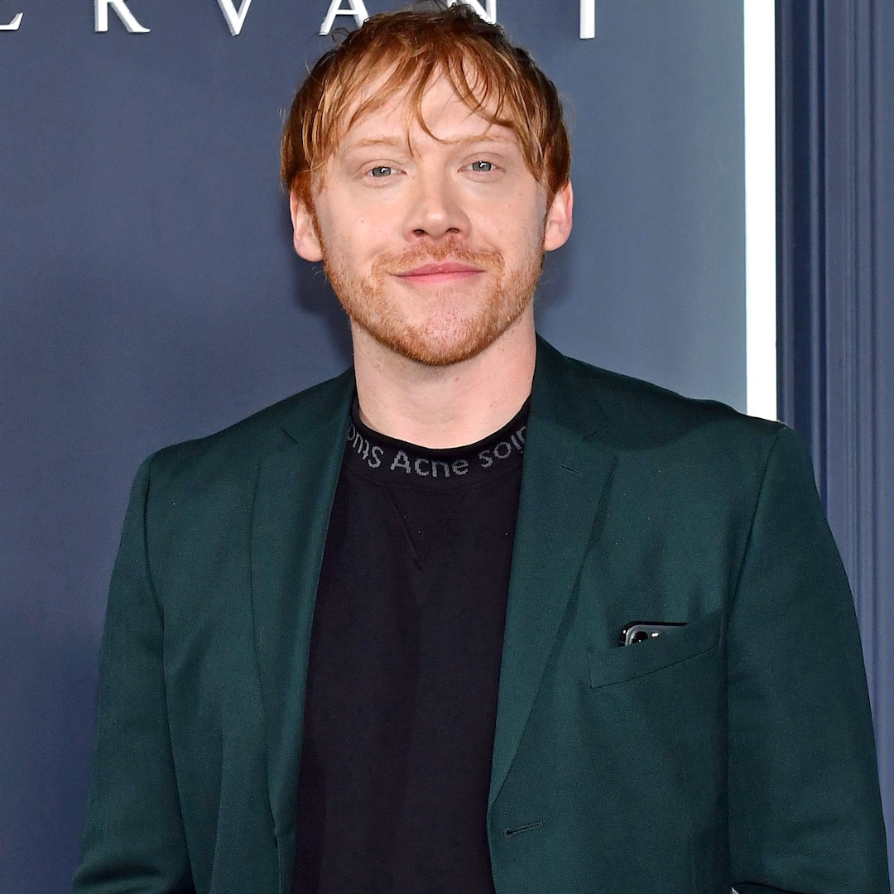

Conheça alguns dos atores de Harry Potter e a pedra filosofal.

Emma Charlotte Duerre Watson (Paris, 15 de abril de 1990) é uma atriz, modelo e ativista britânica.É amplamente conhecida pela sua participação na série de filmes Harry Potter como Hermione Granger e por filmes independentes, bem como pelo seu ativismo principalmente focado nos direitos das mulheres. Listada pela Forbes e pela Vanity Fair como uma das atrizes mais bem pagas do mundo, foi em 2015 considerada pela Time uma das 100 pessoas mais influentes do mundo
Rupert Alexander Lloyd Grint (Hertfordshire, 24 de agosto de 1988) é um ator e produtor britânico. Adquiriu grande notoriedade interpretando o icônico Ronald Weasley (mais conhecido por Rony Weasley no Brasil), um dos três protagonistas da série de filmes Harry Potter, baseada nos livros da autora britânica J.K. Rowling.

Ralph Nathaniel Twisleton-Wykeham-Fiennes (Ipswich, 22 de dezembro de 1962) é um ator, diretor e produtor britânico. Fiennes é conhecido por suas atuações em Schindler's List, The English Patient, Red Dragon, The Constant Gardener, Harry Potter, The Reader, Skyfall, The Grand Budapest Hotel, A Bigger Splash e Spectre. Já foi duas vezes indicado ao Oscar nas categorias de Melhor Ator Coadjuvante, por Schindler's List, e Melhor Ator, por The English Patient, e também primo do Rei Carlos III.

Sir Michael John Gambon, Kt, CBE (Dublin, 19 de outubro de 1940) é um ator irlandês. É mais conhecido por interpretar Alvo Dumbledore a partir do terceiro filme da saga Harry Potter, após a morte de Richard Harris, que interpretou o personagem nos dois primeiros filmes.

Daniel Jacob Radcliffe (Hammersmith, Londres, 23 de julho de 1989) é um ator britânico, conhecido internacionalmente por interpretar o personagem-título na série de filmes da saga Harry Potter escrita por J. K. Rowling. Fez sua primeira atuação profissional aos dez anos de idade no telefilme David Copperfield (1999) da BBC, seguido por sua primeira aparição no cinema pelo filme O Alfaiate do Panamá (2001). Aos onze anos, atuou no primeiro filme da saga Harry Potter. Por seu trabalho na série, conquistou diversos prêmios e faturou mais de 54 milhões de libras esterlinas.